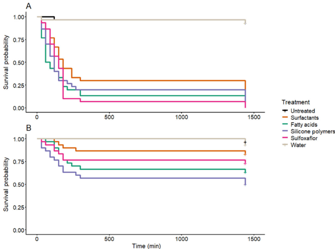
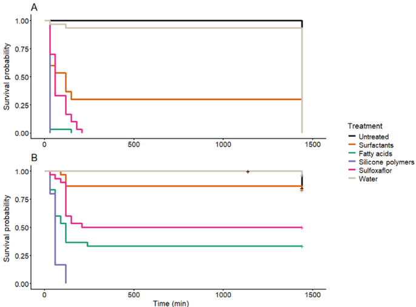
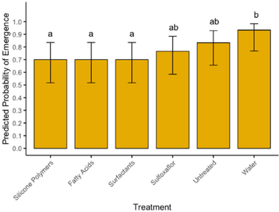
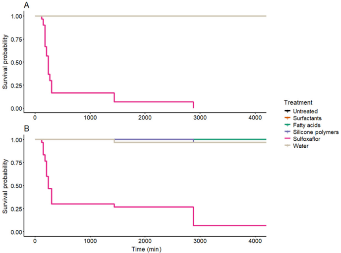
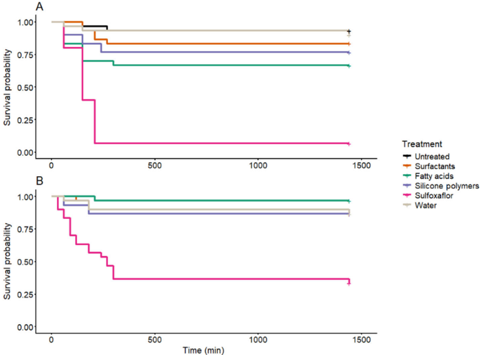
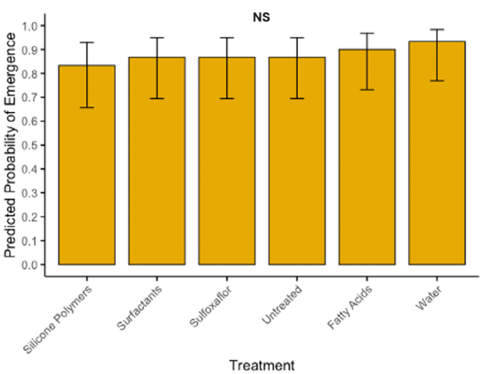

El estudio evalua tres bioinsecticidas de accion fisica, basados en acidos grasos, polimeros de silicona y surfactantes, contra dos pulgones importantes de la colza: Myzus persicae y Brevicoryne brassicae. La pregunta practica es muy IPM: estos productos sirven para bajar pulgones, pero que pasa con sus enemigos naturales, el parasitoide Diaeretiella rapae y la larva depredadora Chrysoperla carnea, segun la ruta de exposicion?
Pregunta Del Paper
Los bioinsecticidas fisicos prometen menor persistencia ambiental que insecticidas sinteticos, pero eso no significa automaticamente que sean inocuos. El paper separa tres rutas: exposicion combinada, donde insecto y hoja reciben el spray; exposicion directa al insecto, luego transferido a hoja sin tratar; y exposicion residual, donde el insecto entra en contacto con hojas ya tratadas y secas.
Esa separacion es el corazon del trabajo. Si un producto mata solo por contacto directo y deja poco residuo toxico, puede ser util para aplicaciones muy dirigidas. Pero si cae sobre parasitoides o depredadores durante la aplicacion, tambien puede causar mortalidad aguda.
Diseno Experimental En Simple
Plagas
Usan ninfas de tercer instar de M. persicae y B. brassicae, criadas en plantas de colza en condiciones controladas.
Enemigos naturales
Evalua adultos y momias de D. rapae, y larvas de tercer instar de C. carnea. Miden supervivencia y emergencia desde momias parasitadas.
Tratamientos
Compara controles negativos, agua, sulfoxaflor como control sintetico positivo, y bioinsecticidas de acidos grasos, polimeros de silicona y surfactantes.
Lectura estadistica
Usa curvas de supervivencia, pruebas log-rank, modelos AFT y modelos binomiales para probabilidad de emergencia de parasitoides.
Resultados Clave
Contacto directo funciona mejor
Acidos grasos y polimeros de silicona reducen fuertemente B. brassicae y de forma moderada M. persicae. El surfactante fue el menos consistente.
Residuo seco casi no controla pulgones
La exposicion a residuos produjo mortalidad baja en pulgones con bioinsecticidas, mientras sulfoxaflor mantuvo alta toxicidad residual.
Riesgo para parasitoides en spray directo
D. rapae adulto fue muy sensible: acidos grasos y polimeros de silicona alcanzaron mortalidad muy alta bajo exposicion directa.
Baja persistencia puede ayudar al IPM
La baja toxicidad residual permite recolonizacion de enemigos naturales despues de secarse el producto, pero exige aplicacion precisa sobre la plaga.
Valores Para Recordar
| Ruta de exposicion | Efecto sobre pulgones | Efecto sobre enemigos naturales | Lectura IPM |
|---|---|---|---|
| Combinada | Fatty acids y silicone polymers fueron fuertes contra B. brassicae; menos completos en M. persicae. Surfactants fue moderado/bajo. | D. rapae adultos sufrieron alta mortalidad; C. carnea fue mas tolerante, aunque no inmune. | Controla mejor cuando el producto moja insecto y hoja, pero aumenta riesgo si hay enemigos naturales presentes. |
| Directa al insecto | En el resumen del paper: B. brassicae 90-56% y M. persicae 63-20% con bioinsecticidas en 72 h. | D. rapae tuvo 100% de mortalidad a 24 h con acidos grasos y polimeros de silicona; C. carnea 66% y 100%, respectivamente. | Alta eficacia de contacto, pero tambien alta toxicidad no objetivo si el spray alcanza enemigos naturales. |
| Residual | Muy baja mortalidad con bioinsecticidas: M. persicae 0%, B. brassicae hasta 10%. | Baja mortalidad con bioinsecticidas: D. rapae hasta 33%, C. carnea hasta 13%; sulfoxaflor fue mucho mas persistente. | Menor riesgo despues de secado, pero tambien menor valor como residuo protector. |
Figuras Explicadas
Incluyo las figuras cientificas principales en orden. Las imagenes pequenas sin caption que corresponden a marcas/editorial/pagina se conservan al final para completar el set extraido.

Containment of Diaeretiella rapae for exposure method assays.
Esta figura documenta como encerraron al parasitoide D. rapae durante los ensayos de exposicion. Es importante porque los adultos son moviles y pequenos: sin contencion adecuada, la mortalidad medida podria confundirse con escape, estres mecanico o contacto desigual con el tratamiento. La figura no es un resultado biologico, sino una pieza de control metodologico.

Survival of (A) Myzus persicae and (B) Brevicoryne brassicae after combined application.
Compara supervivencia de los dos pulgones cuando insecto y hoja reciben el tratamiento. B. brassicae cae mas rapido con acidos grasos y polimeros de silicona, mientras M. persicae es mas resistente o menos afectado. Sulfoxaflor funciona como referencia de alta eficacia. La lectura clave: los bioinsecticidas fisicos pueden controlar pulgones, pero su eficacia depende de especie y contacto directo.

Survival of (A) Diaeretiella rapae and (B) Chrysoperla carnea after combined application.
El extractor no capturo el caption, pero el texto del PDF identifica esta grafica como la Figura 3. Aqui aparece el costo ecologico de aplicar sobre organismos presentes: D. rapae adulto es muy vulnerable a todos los insecticidas, especialmente acidos grasos y polimeros de silicona; C. carnea tolera mejor, aunque silicone polymers y fatty acids tambien reducen supervivencia. Esta figura evita una lectura ingenua de "bio" como "seguro".

Predicted probability of emergence for Diaeretiella rapae from parasitoid mummies after combined application.
Mide si las momias parasitadas logran producir adultos despues del tratamiento. En exposicion combinada, los acidos grasos reducen la emergencia estimada frente a controles; otros tratamientos se solapan mas. Esto sugiere que la etapa de momia ofrece cierta proteccion, pero no absoluta. En IPM importa porque las momias pueden estar en el cultivo cuando se aplica el producto.

Survival of (A) Myzus persicae and (B) Brevicoryne brassicae after direct application.
Aqui el producto se aplica al insecto y luego se transfiere a hoja sin tratar. El patron confirma que el modo de accion es principalmente de contacto: si el producto toca al pulgon, acidos grasos y polimeros de silicona causan mortalidad relevante, sobre todo en B. brassicae. M. persicae vuelve a mostrarse menos sensible y el surfactante queda como alternativa debil.

Survival of (A) Diaeretiella rapae and (B) Chrysoperla carnea after direct application.
Tambien aqui el caption quedo perdido en la extraccion, pero el texto la identifica como Figura 6. Es una de las graficas mas importantes para manejo: D. rapae cae muy rapido con acidos grasos y polimeros de silicona, y C. carnea tambien puede verse seriamente afectada, especialmente por polimeros de silicona. El mensaje es operativo: evitar aplicaciones cuando los enemigos naturales estan expuestos directamente.

Predicted probability of emergence for Diaeretiella rapae from parasitoid mummies after direct application.
Evalua si rociar directamente las momias afecta la emergencia del parasitoide. Los bioinsecticidas reducen la probabilidad estimada a alrededor de 70%, y sulfoxaflor tambien la reduce algo, pero el texto indica que las diferencias no fueron estadisticamente claras. La interpretacion prudente: las momias son menos vulnerables que los adultos, pero no conviene asumir ausencia total de efecto.

Survival of (A) Myzus persicae and (B) Brevicoryne brassicae after exposure to residues.
Esta grafica cambia el mensaje: sobre residuos secos, los bioinsecticidas casi no matan pulgones. M. persicae no muestra mortalidad con bioinsecticidas o controles, y B. brassicae solo mortalidad baja. Sulfoxaflor, en cambio, mantiene toxicidad residual fuerte. Esto confirma que los productos fisicos no son buenos como barrera persistente; necesitan impactar al insecto durante la aplicacion.

Survival of (A) Diaeretiella rapae and (B) Chrysoperla carnea after exposure to residues.
Es la figura que sostiene la parte favorable para IPM. Cuando los residuos ya estan secos, los bioinsecticidas causan mortalidad baja en enemigos naturales comparados con sulfoxaflor. Esto sugiere que, si se evita el contacto directo durante el spray, parasitoides y depredadores podrian recolonizar el cultivo relativamente rapido.

Predicted probability of emergence for Diaeretiella rapae from parasitoid mummies after exposure to residues.
La emergencia de D. rapae desde momias no cambia significativamente por exposicion a residuos. Esto refuerza que la persistencia de estos bioinsecticidas es baja. Para manejo integrado, la figura apoya una estrategia de aplicaciones temporizadas: golpear focos de pulgones y permitir que los enemigos naturales vuelvan cuando el residuo ya no sea biologicamente activo.
Sin caption extraido.
Elemento grafico/editorial de la primera pagina. Se conserva para completar el set de imagenes, pero no aporta a la interpretacion biologica.

Sin caption extraido.
Marca o elemento pequeno de pagina detectado como imagen por el extractor. No corresponde a una figura cientifica del articulo.
Sin caption extraido.
Elemento sin caption extraido junto al contenido del PDF. No se usa para conclusiones.

Sin caption extraido.
Elemento grafico pequeno sin valor interpretativo central.
Sin caption extraido.
Elemento detectado sin caption. La figura cientifica principal de esta pagina es la Figura 2, incluida arriba.

Sin caption extraido.
Elemento pequeno de pagina extraido por el pipeline; no corresponde a una grafica de resultados.

Sin caption extraido.
Elemento sin caption; la grafica cientifica de esa pagina esta explicada como Figura 5.
Sin caption extraido.
Elemento pequeno sin interpretacion cientifica propia.
Sin caption extraido.
Elemento de pagina sin caption; los resultados de esa pagina estan en Figuras 8 y 9.

Sin caption extraido.
Elemento grafico pequeno detectado antes de la Figura 10.

Sin caption extraido.
Elemento editorial o de pagina sin funcion analitica.
Sin caption extraido.
Ultimo elemento sin caption del PDF; no se usa para interpretar resultados.
Modelo Mental Del Resultado
Si el bioinsecticida toca al pulgon: puede matar, especialmente en B. brassicae, con acidos grasos y polimeros de silicona como opciones mas fuertes.
Si el producto ya se seco: pierde gran parte de su actividad, asi que no funciona como proteccion residual prolongada.
Si toca enemigos naturales: puede ser peligroso, sobre todo para D. rapae adulto y para C. carnea con polimeros de silicona.
La ventana de manejo: aplicar de forma dirigida sobre focos de pulgones, evitando momentos o zonas con alta presencia de parasitoides y depredadores expuestos.
Resumen Final
El paper muestra que estos bioinsecticidas no son reemplazos simples de insecticidas sinteticos. Funcionan mejor como herramientas de contacto, no como residuos persistentes. Esa baja persistencia tiene dos caras: limita el control si no se moja directamente la plaga, pero tambien reduce el riesgo despues del secado y facilita la recolonizacion por enemigos naturales. En manejo integrado, su valor esta en aplicaciones estrategicas y precisas, no en tratamientos amplios sin mirar quien esta presente en el cultivo.
Archivo HTML generado desde el PDF local y las figuras ya extraidas en pappers/ilove-Tonks.2026_figures.